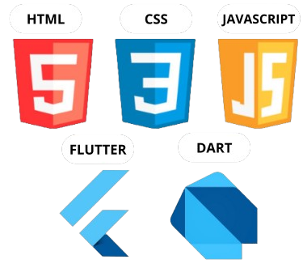

Augusto Negri Xavier

Nivel de Ingles: Intermediario
Trabalho voluntario: monitor de MATEMATICA
Centro Universitario Ingá
Analise e Desenvolvimento de Sistemas
Presencial, Párana | Previsão de termino: Dezembro de 2026
Alura
HTML e CSS
Plataforma Digital, Párana | Dezembro de 2020
Udemy
JAVASCRIPT- do zero ao Master
Plataforma Digital, Párana | Janeiro de 2024
João de Faria Pioli
Robotica Educacional
Maringa, Párana | Dezembro de 2022
Cecapi
Hardware
Máringa, Paraná | Dezembro de 2022
João de Faria Pioli
Ensino Médio Completo
Máringa, Paraná | Dezembro de 2023
Tecnologias que sei / estou aprendendo:

close
Centro Universitario Ingá
Começei a Faculdade de ADS em Fevereiro de 2024, ná qual tenho diversas aulas como: Redes de Computadores, Algoritmos e Programação Aplicada, Banco de Dados, Programação Orientada a Objetos, Desenvolvimento Mobile, entre outros.
close
Alura
Realizei alguns cursos da Alura que foram disponibilizados por meio de um projeto do governo do Paraná em parceria com a instituição, no qual tivemos cursos de: HTML e CSS, Bootstrap, layouts Responsivos, Css Grid, flexbox.
close
Udemy
Para aumentar meus conhecimentos em programação decidi explorar o mundo do JavaScrip e adquiri este curso na Udemy, no qual aprendi os conceitos e metodos da linguagem.
close
Robotica
Realizei mais um projeto ofertado pelo governo do Paraná, que foram aulas sobre robotica, onde montavamos e programavamos robos
close
Cecapi
Realizei presencialmente um curso sobre montagem e manutenção de computadores, foi por meio deste curso que eu me apaixonei e pude ser inserido no mundo da tecnologia
close